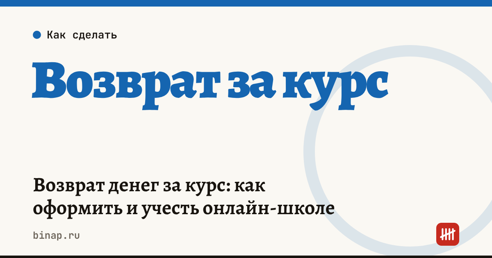

Возврат денег за курс: как оформить и учесть онлайн-школе

Ученик вправе отказаться от курса в любой момент, а школа вправе удержать только фактически понесённые расходы. Это правило ст. 32 Закона о защите прав потребителей, и пункт оферты «деньги не возвращаются» его не отменяет. Ниже — как посчитать сумму к возврату, оформить чек и учесть возврат в налогах.
Коротко
- Отказаться от курса ученик может в любое время; школа возвращает деньги за вычетом фактических расходов (ст. 32 Закона о защите прав потребителей).
- Фактические расходы нужно доказать: пройденные уроки, проверка домашних заданий, доступ к материалам — по понятному расчёту из оферты.
- На возврат пробивают чек «Возврат прихода» (если работаете с кассой) или аннулируют и при необходимости перевыпускают чек самозанятого.
- На УСН возврат уменьшает доходы того периода, в котором вы вернули деньги.
- Если курс был в рассрочку, возврат идёт через банк-партнёр по его правилам.
Сроки, изменения и разборы для ИП и самозанятых — каждое утро в Telegram и MAX. Подпишитесь, чтобы не пропустить.
Сколько можно удержать
Закон не называет процентов — только «фактически понесённые расходы». Безопаснее всего считать их от программы курса.
| Способ расчёта | Как считать | Риск спора |
|---|---|---|
| По пройденным урокам | цена × доля пройденных уроков | низкий |
| По времени доступа | цена × прошедшие недели ÷ длительность | средний |
| Фиксированный штраф «за отказ» | фиксированная сумма или процент | высокий: суды часто считают такие условия недействительными |
Пример
Расчёт редакции. Курс — 40 000 ₽, 20 уроков. Ученик прошёл 6 и попросил вернуть деньги.
- Расходы школы по пройденным урокам: 40 000 × 6 ÷ 20 = 12 000 ₽.
- К возврату: 40 000 − 12 000 = 28 000 ₽.
Если бы школа удержала «штраф 50%», то есть 20 000 ₽, ученик мог бы потребовать разницу через суд, а с ней — неустойку, штраф до 50% присуждённой суммы и моральный вред.
Как оформить возврат
- Примите заявление от ученика в письменном виде: письмо на почту, форма на сайте или сообщение в поддержку с указанием реквизитов.
- Посчитайте сумму по правилу из оферты и отправьте ученику расчёт.
- Верните деньги тем же способом, каким он платил. Возврат на карту оплаты сделать проще всего.
- Оформите чек:
- ИП или ООО с кассой — чек с признаком «Возврат прихода» на сумму возврата;
- самозанятый — аннулируйте чек с причиной «Возврат средств»; если часть денег оставили себе, пробейте новый чек на эту часть.
- Учтите в налогах: на УСН сумму возврата вычитают из доходов в периоде возврата; на НПД доход уменьшится после аннулирования чека.
Если ученик покупал в рассрочку, напишите в банк-партнёр: он закроет кредит ученика и спишет с вас полученные деньги и, возможно, часть комиссии. Сколько рассрочка стоит школе — в статье Рассрочка для онлайн-курса: стоимость для школы.
Как снизить число возвратов
- В оферте и на странице курса покажите программу и порядок возврата простыми словами.
- Дайте вводный урок или пробную неделю до оплаты.
- Следите за первыми 2–3 уроками: большинство отказов случается в начале курса.
Сколько школе на самом деле стоит один ученик с учётом возвратов, рекламы и комиссий — посчитайте в калькуляторе стоимости ученика. Если вы проводите курсы как самозанятый — где граница режима, разобрали в статье Консультации и курсы как самозанятый. Все материалы — в разделе Онлайн-школам.
Частые вопросы
Можно ли написать в оферте «деньги не возвращаются»? Можно написать, но для ученика-потребителя такое условие не действует: право отказаться от услуги с оплатой фактических расходов дано законом.
В какой срок нужно вернуть деньги? Для отказа по ст. 32 закон не называет отдельного срока; разумный ориентир — 10 дней с заявления, как для требований о возврате по другим статьям закона. Пропишите свой срок в оферте.
Ученик — компания, которая оплатила обучение сотрудника. Правила те же? Нет, для юрлиц действует договор и ГК: условия возврата определяются тем, что вы подписали.